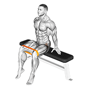

1
Banded
Lateral Walk
band · above knees
Lateral Walk
band · above knees
2 × 12
steps / side
steps / side

Approximate reference (seated band hip abduction) — same muscle and same band resistance, but yours is standing and walking, which loads the stance leg as well
Target: abductors
Position
- Band just above the knees, hands on hips
- Quarter-squat, chest up, feet pointing straight ahead
Execution
- Step sideways with control, keeping constant tension on the band
- Resist the trailing leg back in — don't let it snap across
- Small steps, stay low, no torso lean over the stance leg
- Week 15: back above the knees, 2 × 12 steps per side — drop the ankle position for one week. This one is activation, so it stays in every session regardless of the deload
- It's first on purpose — this is warm-up activation, not a lift; go straight from here into the split squat. This is the week it earns its place: 1,400 m of descending across Friday and Saturday is exactly the load that makes a tired glute medius let the knee collapse inward
Watch: feet turning outward · knees caving inward · standing up out of the
quarter-squat. If the knees collapse, the band is too strong — go lighter
2
Bulgarian
Split Squat
6 kg
Split Squat
6 kg
2 × 8
/ leg
/ leg

Approximate reference (dumbbell single-leg split squat) — this dataset has no Bulgarian split squat; the pattern is close, the setup differs
Target: quads
Position
- Back foot on the bench, laces down
- Front foot forward — knee doesn't pass the toes
Execution
- Lower until the thigh is ≈ parallel to the floor
- Torso slightly leaned forward
- Push through the whole foot, mainly the heel
- Week 15: 6 kg × 8 reps, 2 sets — back to the lighter kettlebell for one week. Quality of position over everything; this is a movement rehearsal, not a training stimulus
Watch: knee caving inward · weight on the back leg · front foot too close.
Reps 9 and 10 are where form breaks — stop the set rather than finish it badly
3
Single-Leg
Calf Raise
6 kg
Calf Raise
6 kg
2 × 8
/ leg
/ leg

Target: calves
Position
- Ball of the foot on the edge of a step, heel in the air
- Hold something for balance, not to support your weight
Execution
- Rise all the way up, squeeze at the top for 1 sec
- Lower in 4 seconds — slow eccentric
- Heel below the step for full range of motion
- Week 15: 6 kg returns, 4s eccentric, 2 sets — the load comes back exactly here, because this is the week the calves are freshest. It came off in week 14 while they were sore and while Friday and Saturday were supplying 1,400 m of descending; a deload with a 350 m Saturday is the safe place to own it again. Two sets, not three — the deload is in the volume, not the kilos
Watch: lowering too fast — brake more than you think you need to. Any
Achilles soreness lasting past 48h → back to bodyweight for the week
4
Single-Leg
Glute Bridge
6 kg
Glute Bridge
6 kg
2 × 8
/ leg
/ leg

Target: glutes
Position
- Lying on your back, one knee bent, heel close to your glutes
- The other leg straight or with the knee pulled to your chest
Execution
- Week 15: 6 kg, 2 sec hold, 2 sets — lighter kettlebell, shorter squeeze. Hips still level; the standard for what counts as a rep never deloads
- Drive through the heel of the supporting leg, raise your hip
- Hips level — don't let the free side drop
- Squeeze the glute, hold 2 sec at the top
- Ribs down — don't arch your lower back
- If the weight breaks hip level, drop back to 6 kg — form rules
Watch: the free-side hip drops or rotates → shorten the range and level
out before continuing. Drive from the glute, never the lower back
5
Dead
Bug
bodyweight
Bug
bodyweight
2 × 8
/ side
/ side

Target: abs
Position
- Lying on your back, arms straight up toward the ceiling
- Knees at 90° over your hips (tabletop)
Execution
- Lower back pressed to the floor — the key point
- Slowly extend the opposite arm + leg
- Without touching the floor, return, switch sides
- Flat back > range of motion
- Week 15: 4 sec per rep, 2 sets. Trunk control is cheap to maintain and expensive to rebuild, so the tempo holds even though the volume halves
Watch: this is anti-extension control, not strength — adding weight
recruits the psoas and arches your back. Back arching as you extend the leg → reduce the range
6
Side
Plank
bodyweight
Plank
bodyweight
2 × 30s
/ side
/ side

Approximate reference (incline side plank variant) — this dataset has no plain side-plank hold
Target: abs
Position
- Side plank on your forearm
- Body in a straight line from head to feet
- Hips stacked, not rotated or dropped
- Bottom leg on the floor, top leg stacked on top
Execution
- Contract your obliques and core, keep a straight line
- Breathe, don't hold your breath
- Week 15: 30 sec — back down from 45. It returns to 45 in week 16 and grows from there
- Cut the time short if your hips drop — form > duration
Watch: hips dropping or rotating — cut the time before your form breaks
7
High Step-up
+ Eccentric Descent
bodyweight
+ Eccentric Descent
bodyweight
2 × 8
/ leg
/ leg

Approximate reference (dumbbell step-up) — shows the step-up pattern only; doesn't capture the box height or slow eccentric descent that define this exercise
Target: glutes
Position
- Use the jump box — height at mid-shin / knee
- Whole foot planted on top, not just the toes
Execution
- Step up driving through the heel of the top leg, no push-off from the bottom leg
- Drive the knee up — mimics the power-hike motion on a climb
- Knee tracking over the foot — not caving inward
- Lower in 4 seconds — the slow eccentric preps your quads for trail descents
- Week 15: bodyweight on a lower box, 2 sets. Still no load, and now less height too. Saturday is only 15 km / 350 m this week, so for once the gym isn't competing with the mountain — but a deload is not the moment to introduce a new stimulus
Watch: the value is in the slow descent and the higher box, not stepping
up fast. Knee pain → lower the height or reduce the range
8
One-Arm
Bent-Over Row
6 kg
Bent-Over Row
6 kg
2 × 10
/ arm
/ arm

Target: upper back
Position
- Hinge at the hips, flat back, soft knees
- Free hand on a bench or your thigh for support
- Kettlebell hangs straight down from the working arm
Execution
- Pull the kettlebell to your hip, elbow close to the body
- Squeeze the shoulder blade at the top
- Lower under control, don't let it drop
- Week 15: 6 kg × 10 reps, 2 sets — lighter and shorter. Back to 12 kg × 12 in week 16
Watch: twisting the torso to help the pull, or rounding the lower back —
the hinge holds, only the arm moves
9
Calf Raise
Bent-Knee
6 kg
Bent-Knee
6 kg
2 × 8
/ leg
/ leg

Approximate reference (seated calf raise) — same bent-knee/soleus mechanism, different setup (seated vs. standing on a step)
Target: calves
Position
- Ball of the foot on the edge of a step, same setup as the straight-leg version
- Knees bent ~30–40° throughout — this is what shifts the load to the soleus
Execution
- Rise all the way up, squeeze at the top for 1 sec
- Lower in 3 seconds — slow eccentric, same cue as the straight-leg version
- Week 15: 6 kg, 2 sets — you already took this load in week 13 and it held; the deload is where it gets confirmed rather than tested. It came off in week 14 along with the straight-leg version while the calves were sore, and it comes back here. If the knee creeps straight at 6 kg, go back to bodyweight — this exercise earns its load through position, not kilos
Watch: letting the knee straighten mid-set — that shifts the work back to
the gastrocnemius and defeats the point of this variant